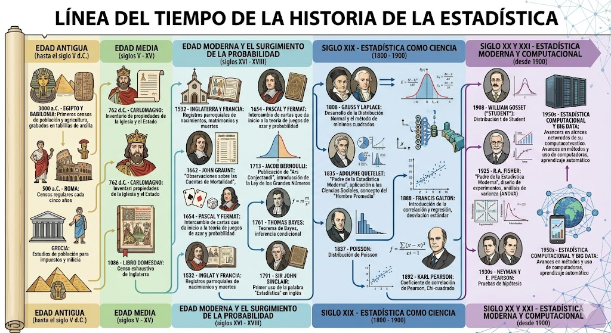
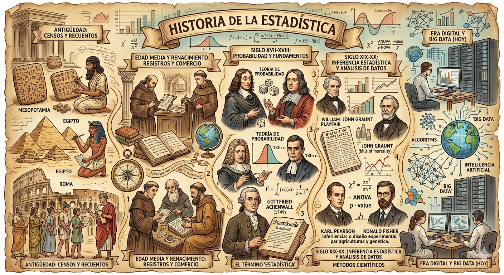
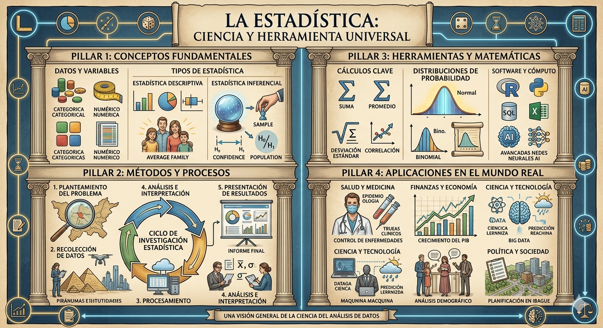

La estadística es una rama de las matemáticas dedicada a la recolección, organización, análisis e interpretación de datos. Su origen se remonta a las primeras civilizaciones, como Egipto, Babilonia y China, donde se realizaban censos y registros con fines administrativos, fiscales y militares.
Durante la Edad Media, el uso de datos continuó principalmente con propósitos gubernamentales, pero fue en el Renacimiento cuando comenzó a desarrollarse un enfoque más sistemático. En el siglo XVII, matemáticos como Blaise Pascal y Pierre de Fermat sentaron las bases de la teoría de la probabilidad al estudiar juegos de azar, lo que marcó un punto de partida fundamental para el desarrollo de la estadística moderna.
En los siglos XVIII y XIX, la estadística se consolidó como una disciplina científica. Figuras como Carl Friedrich Gauss contribuyeron con el desarrollo de la distribución normal, mientras que Adolphe Quetelet aplicó métodos estadísticos al estudio de fenómenos sociales.
Durante el siglo XX, Ronald Fisher desarrolló herramientas fundamentales como el diseño experimental y el análisis de varianza. En la actualidad, la estadística desempeña un papel esencial en la ciencia de datos, la inteligencia artificial y la salud pública.

Figura 1. Línea del tiempo de la historia de la estadística.
Personajes Clave de la Historia
Blaise Pascal
1623 – 1662
Co-fundador de la teoría de la probabilidad a través del estudio de juegos de azar.
Carl F. Gauss
1777 – 1855
Desarrolló la distribución normal y el método de mínimos cuadrados.
Adolphe Quetelet
1796 – 1874
Aplicó la estadística al estudio de fenómenos sociales y demográficos.
Ronald Fisher
1890 – 1962
Creó el diseño experimental y el análisis de varianza (ANOVA).
John Tukey
1915 – 2000
Impulsó el Análisis Exploratorio de Datos (EDA) y la estadística moderna.
Egipto, Babilonia y China — Las primeras civilizaciones realizaban censos y registros para organizar recursos, conocer la población y planificar la recaudación de impuestos.
Edad Media
Los datos se empleaban principalmente para fines fiscales y militares. Los gobiernos registraban tierras, cosechas y población.
Siglo XVII
Blaise Pascal y Pierre de Fermat desarrollaron la teoría de la probabilidad, marcando el inicio de la estadística moderna.
Siglos XVIII – XIX
Carl Friedrich Gauss y Adolphe Quetelet consolidaron la estadística como ciencia aplicada a fenómenos naturales y sociales.
Siglo XX
Ronald Fisher y John Tukey revolucionaron el análisis estadístico con el diseño experimental y el análisis exploratorio de datos.
Siglo XXI
La estadística se fusiona con la ciencia de datos e inteligencia artificial. El Big Data convierte a la estadística en herramienta clave para la toma de decisiones.
2 Conceptos Fundamentales de la Estadística

Figura 2. Conceptos fundamentales de la estadística.
Población, Muestra y Variables
Población
Conjunto completo de elementos, objetos o individuos que comparten una característica de interés para el estudio.
Ejemplo: Todos los estudiantes matriculados en una universidad.
Población Finita
Aquella cuyo número de elementos puede contarse con exactitud; tiene un límite perfectamente definido.
Ejemplo: Los 1.200 empleados de una empresa.
Población Infinita
Aquella cuyo número de elementos no puede delimitarse o es tan grande que resulta imposible de contar.
Ejemplo: Las estrellas del universo.
Muestra
Subconjunto representativo de la población, seleccionado para estudiar y extraer conclusiones sobre el total.
Ejemplo: 100 estudiantes seleccionados de la universidad para una encuesta.
Característica
Cualidad o atributo observable en los elementos de la población; lo que se mide, cuenta o clasifica.
Ejemplo: El color de cabello de los estudiantes.
Variable
Cualquier característica que puede tomar distintos valores de un elemento a otro dentro de la misma población.
Ejemplo: La estatura de cada estudiante.
Diferencia clave: La característica es el atributo en general (ej: "color de ojos"), mientras que la variable es ese mismo atributo cuando toma diferentes valores entre individuos (ej: azul, verde, café).
Estadística Descriptiva vs. Inferencial
Estadística Descriptiva
Organiza, resume y presenta los datos obtenidos sin ir más allá del conjunto estudiado. Solo describe lo que ya se tiene.
Ejemplo: En un salón de 30 alumnos, el promedio de notas es 3.8. No se saca ninguna conclusión más allá de ese salón.
Estadística Inferencial (Inductiva)
A partir de los resultados de una muestra, generaliza conclusiones para toda la población usando probabilidad.
Ejemplo: Se encuestan 500 personas para predecir el resultado de las elecciones del país entero.
Utilidad en Administración Pública
La estadística es herramienta fundamental para el administrador público porque su trabajo gira en torno a decisiones que afectan comunidades enteras:

Figura 3. Aplicación de la estadística en la administración pública.
Planeación de políticas públicas
Antes de construir un hospital, colegio o vía, el administrador necesita saber cuántas personas viven en la zona. Sin datos estadísticos, esa decisión sería a ciegas.
Medición de programas sociales
Si el gobierno lanza un programa de subsidios o empleo, la estadística permite medir si está funcionando comparando cifras antes y después.
Administración del presupuesto
Los datos sobre pobreza, cobertura en salud o deserción escolar indican dónde hay más necesidades y cómo priorizar el gasto público.
Rendición de cuentas
La transparencia en lo público exige mostrar resultados con números reales: familias beneficiadas, presupuesto ejecutado, reducción del desempleo.
Encuestas de satisfacción
El administrador puede medir qué tan satisfecha está la comunidad con los servicios del Estado y usar esa información para mejorar.
Fenómenos Estadísticos y No Estadísticos
Fenómenos Estadísticos
Ocurren de forma repetida y colectiva, permitiendo observar patrones y tendencias.
El índice de precios al consumidor mes a mes.
La tasa de desempleo en una ciudad durante el año.
Las ventas mensuales de un supermercado en 12 meses.
Fenómenos NO Estadísticos
Hechos individuales y únicos que no pueden generalizarse ni compararse.
El nacimiento de una sola persona.
La firma de un único contrato entre dos empresas.
La opinión personal de un solo individuo.
Principio clave
"La estadística estudia el comportamiento de fenómenos colectivos y nunca de una observación individual."
Este principio es correcto: la estadística pierde sentido cuando se aplica a una sola observación, porque no hay con qué comparar ni analizar tendencias. Decir que "Juan mide 1.80 m" no es estadística. Pero decir que "el promedio de estatura de 1.000 hombres colombianos es 1.70 m" sí lo es.
Etapas de una Investigación Estadística
1. Planeación
Definir el objetivo
Investigación preliminar
Formulación de hipótesis
Diseño del formulario
Diseño muestral
2. Recolección de datos
Selección y capacitación de encuestadores
Trabajo de campo
Revisión y validación de formularios
3. Procesamiento y análisis
Codificación y tabulación
Análisis e interpretación
Elaboración de informes y conclusiones
Preguntas de Repaso
3 Clasificación de Variables
Una variable es cualquier característica que puede tomar distintos valores. En estadística se clasifican según su naturaleza en cualitativas y cuantitativas, y estas a su vez en subtipos.
Variable Nominal Cualitativa
Categorías sin ningún orden entre ellas. Solo permiten clasificar, no ordenar ni medir.
Ejemplos: tipo de contrato, sector gubernamental, departamento de trabajo, tipo de ciudadano.
Variable Ordinal Cualitativa
Categorías que tienen un orden lógico, pero la distancia entre categorías no es necesariamente igual.
Ejemplos: nivel de experiencia (bajo/medio/alto), grado de satisfacción, calidad del servicio.
Variable Discreta Cuantitativa
Toma valores enteros contables. No puede tomar valores intermedios entre dos consecutivos.
Ejemplos: número de empleados, contratos firmados, quejas recibidas, reuniones realizadas.
Variable Continua Cuantitativa
Puede tomar cualquier valor dentro de un intervalo, incluyendo decimales. Se obtiene por medición.
Ejemplos: tasa de desempleo (%), presupuesto anual, crecimiento económico, tiempo de respuesta.
Tabla de Clasificación — Administración Pública
Busca variables por nombre o filtra por tipo usando la barra de búsqueda: